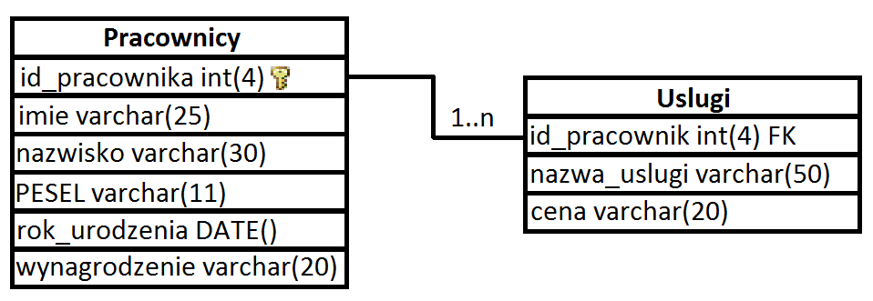
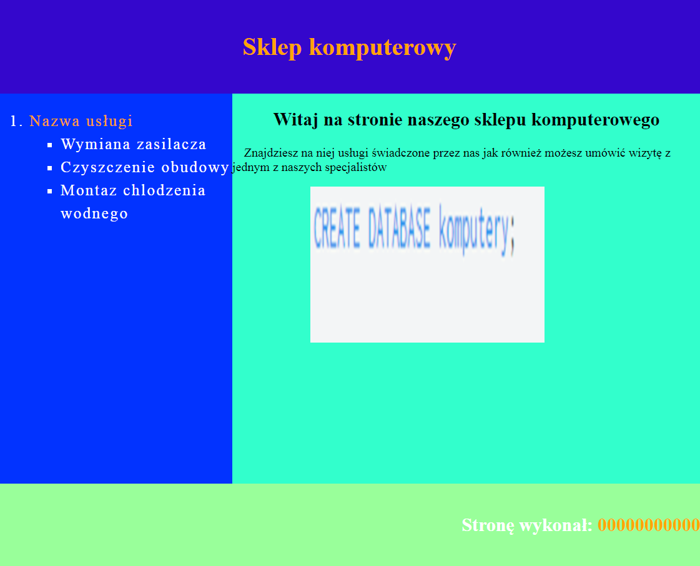
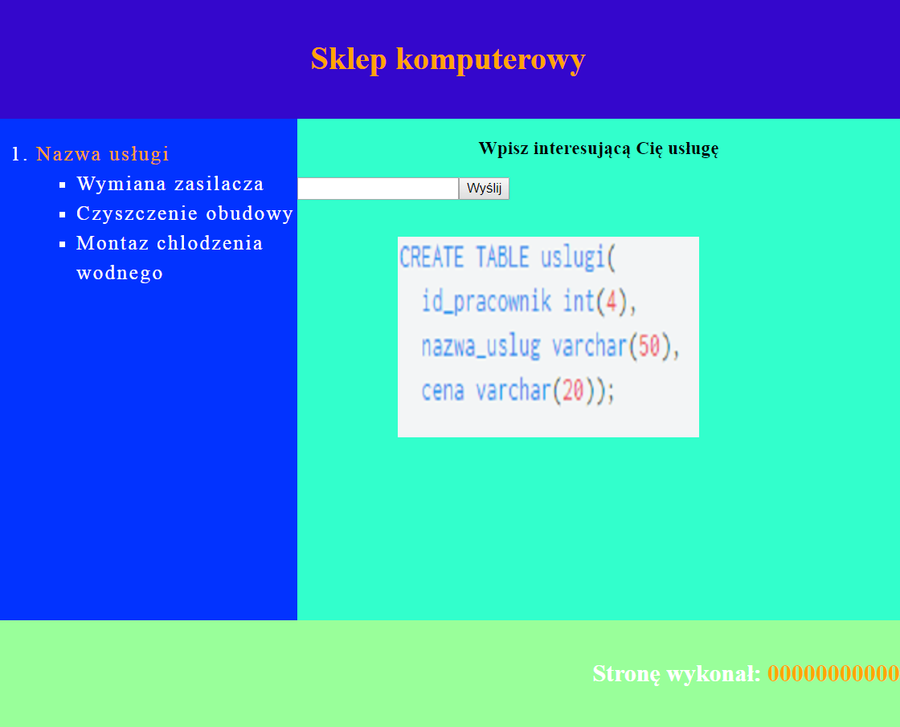
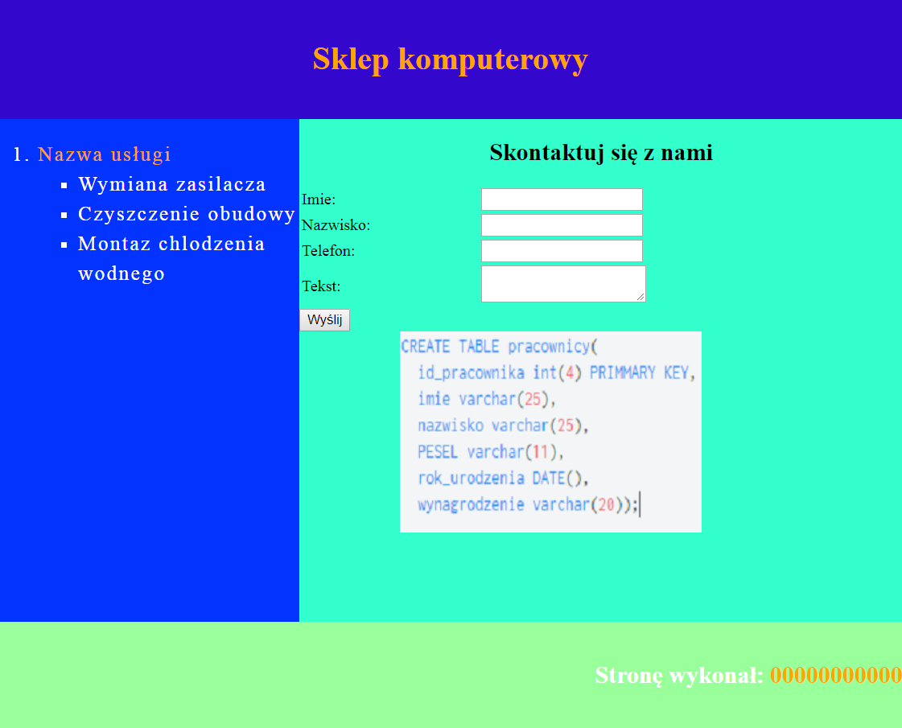
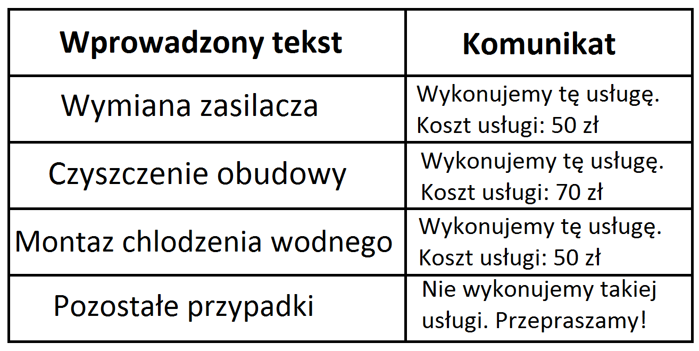
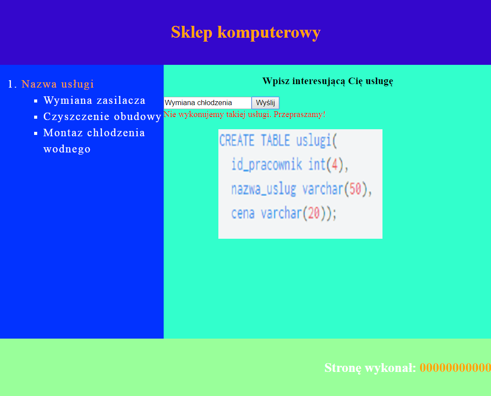

Sklep komputerowy
Zapoznanie
Wykonaj aplikację dla sklepu komputerowego. Wykorzystaj pakiet XAMPP do stworzenia bazy danych, aplikację Notepad++ do stworzenia strony internetowej wraz z wymaganym stylem i działającym skryptem oraz program graficzny Gimp/Paint do przerobienia załączonej grafiki na podane wymiary.
Zaloguj się na konto uczeń. Hasło do konta uczeń to: 3gzam!n2017. Na pulpicie konta uczeń stwórz folder, w którym będą znajdować się skończone prace. Jako nazwę folderu wpisz swój numer PESEL.
Baza danych
Uruchom pakiet XAMPP, zaznacz w nim serwery: Apache oraz MySQL i uruchom serwer. Wejdź na uruchomiony serwer i stwórz nową bazę danych o nazwie Komputery. Wykonaj zrzut ekranu po utworzeniu bazy danych z widocznym kodem MySQL. Zrzut ekranu zapisz jako baza.png w nowo utworzonym folderze Zrzuty w folderze z numerem PESEL.

Stwórz dwie tabele: Pracownicy i Uslugi zgodnie ze schematem widocznym powyżej. Po stworzeniu tabel wykonaj dwa zrzuty ekranu z widocznym kodem MySQL zgodnie z następującym nazewnictwem: tabela_pracownicy.png ukazujący proces stworzenia tabeli Pracownicy oraz tabela_uslugi.png ukazujący proces stworzenia tabeli Uslugi. Wykonane zrzuty ekranu zapisz w folderze Zrzuty.
Po stworzeniu tabel uzupełnij je wartościami podanymi poniżej. Po zakończeniu wykonaj dwa zrzuty ekranu: wpisywanie_pracownicy.png po wpisaniu danych do tabeli Pracownicy oraz wpisywanie_uslugi.png po wpisaniu danych do tabeli Uslugi. Wykonane zrzuty ekranu zapisz w folderze Zrzuty.
Pracownicy
:
id_pracownika: 1, 2, 3
imie: Mariola, Monika, Krzysztof
nazwisko: Nowakowska, Kowalska, Nosal
PESEL: 89020594738, 86030249538, 92010811458
rok_urodzenia: 1989-02-05, 1986-03-02, 1992-01-08
wynagrodzenie: 2500, 2300, 2200
Uslugi:
id_pracownik: 1, 2, 3
nazwa_uslugi: wymiana zasilacza, czyszczenie obudowy, montaz chlodzenia wodnego
cena: 50, 70, 50
Połącz tabelę Pracownicy z tabelą Uslugi za pomocą relacji jeden do wielu. Podczas tworzenia relacji klucz podstawowy o nazwie id_pracownika łączy się z wierszem id_pracownik z tabeli Uslugi tworząc klucz obcy dla wiersza id_pracownik. Po wykonaniu zapytania wykonaj zrzut ekranu z widocznym kodem MySQL i zapisz go pod nazwą relacja.png w folderze Zrzuty.
Utwórz zapytania podane poniżej. Po wykonaniu każdego zapytania utwórz nowy plik w nowo utworzonym folderze zapytania i zapisz go zgodnie z następującym nazewnictwem: zapytanie_1.txt zawierający kod wykonania pierwszego zapytania, zapytanie_2.txt zawierający kod wykonania drugie zapytania oraz zapytanie_3.txt zawierający kod wykonania trzeciego zapytania.
Zapytanie 1:
- wyświetl imie, nazwisko, PESEL oraz wynagrodzenie z tabeli Pracownicy
Zapytanie 2:
- wyświetl imie i nazwisko z tabeli Pracownicy, gdzie wynagrodzenie jest większe niż 2250
Zapytanie 3:
- wyświetl imie, nazwisko, PESEL, wynagrodzenie, nazwa_uslugi oraz cena z tabel Pracownicy i Uslugi, gdzie wynagrodzenie jest mniejsze lub równe 2300 oraz nazwisko zaczyna się na literę K
Witryna internetowa
Wykorzystując edytor graficzny Gimp lub Paint przeskaluj zrzuty ekranu baza.png, tabela_uslugi.png oraz tabela_pracownicy.png na wymiary: 300px szerokość obrazka oraz 200px wysokości obrazka. Przeskalowane zrzuty ekranu zapisz w nowo utworzonym folderze o nazwie przeskalowane.
Wykorzystując program Notepad++ wykonaj witrynę internetową dla sklepu komputerowego. Stwórz następujące pliki: glowna.html, oferta.html, kontakt.html i zapisz je w nowo utworzonym folderze o nazwie strona. Każda strona wykorzystuje zewnętrzny arkusz stylów o nazwie personalizacja.css, który w odpowiedni sposób jest podłączony do każdej ze stron. Arkusz personalizacja.css również znajduje się w folderze strona.
Każda strona wykonana jest tym samym schematem. Jedynym wyjątkiem jest panel_prawy, który jest inny na każdej ze stron.
Ogólny schemat każdej ze stron:
- tytuł strony to "Sklep komputerowy",
- strona składa się z czterech divów: baner, panel_lewy, panel_prawy oraz stopka,
- posiada metę, która koduje znaki uwzględniając polskie znaki diakrytyczne,
- posiada metę, która specyfikuje autora strony. W wartości mety należy podać swój numer PESEL,
- divy panel_lewy oraz panel_prawy sąsiadują ze sobą,
- w banerze znajduje się wyśrodkowany nagłówek poziomu pierwszego zawierający tekst "Witaj na stronie naszego sklepu komputerowego". Treść baneru jest także odsyłaczem do strony glowna.html
- w panel_lewy znajduje się zagnieżdżona lista nienumerowana oraz numerowana. Lista nienumerowana posiada kwadraty jako punktor. Pierwszy element listy numerycznej zawiera odnośnik do strony oferta.html
- stopka zawiera napis "Stronę wykonał: 00000000000" wyrównany do prawej, gdzie w miejscu zer należy podać swój numer PESEL. Numer PESEL jest także odnośnikiem do strony kontakt.html.

Schemat strony glowna.html:
- w panel_prawy znajduje się nagłówek poziomu drugiego zawierający tekst "Witaj na stronie naszego sklepu komputerowego",
- w panel_prawy pod nagłówkiem znajduje się paragraf o treści "Znajdziesz na niej usługi świadczone przez nas jak również możesz umówić wizytę z jednym z naszych specjalistów",
- w panel_prawy pod paragrafem znajduje się przeskalowany zrzut ekranu o nazwie baza.png. Jego alternatywny tekst to baza.png

Schemat strony oferta.html:
- w panel_prawy znajduje się nagłówek trzeciego stopnia o treści "Wpisz interesującą Cię usługę",
- w panel_prawy pod nagłówkiem znajduje się pole do wprowadzania danych typu tekstowego,
- w panel_prawy obok pola do wprowadzania danych znajduje się przycisk o wartości "Wyślij" ze zdefiniowaną funkcją w zdarzeniu onclick,
- w panel_prawy pod przyciskiem znajdują się dwa znaczniki końca linii, a pod nimi przeskalowany zrzut ekranu o nazwie tabela_uslugi.png. Jego alternatywny tekst to tabela_uslugi.png

Schemat strony kontakt.html:
- w panel_prawy znajduje się nagłówek drugiego stopnia o treści "Skontaktuj się z nami",
- w panel_prawy pod nagłówkiem znajduje się formularz, a w nim tabela 2x4 o zdefiniowanej szerokości 100%,
- w panel_prawy wszystkie pola do wprowadzania danych są typu tekstowego oprócz pola o treści "Telefon:", który jest typu telefonowego,
- w panel_prawy pod tabelą znajduje się przycisk wysyłania danych.
- w panel_prawy pod formularzem znajduje się przeskalowany zrzut ekranu o nazwie tabela_pracownicy.png. Jego alternatywny tekst to tabela_pracownicy.png
Schemat arkusza stylów personalizacja.css:
- baner: kolor tła #3300CC, szerokość 900px, wyśrodkowanie tekstu, kolor czcionki biały, grubość czionki pogrubiona, marginesy wewnętrze: 20px od góry oraz 20px od dołu,
- panel_lewy: szerokość 300px, wysokość 500px, kolor tła #0033FF, rozmiar czcionki 20px, odstęp pomiędzy liniami 150%, rozstrzelenie liter 2px,
- panel_prawy: szerokość 600px, wysokość 500px, kolor tła #33FFCC,
- stopka: kolor tła #99FF99, szerokość 900px, marginesy wewnętrze: 20px od góry oraz 20px od dołu, wyrównanie tekstu do prawej, kolor czcionki biały,
- inne: wcięcie paragrafu 15px, zewnętrzny margines obrazka od lewej 100px, lista nienumerowana posiada kwadraty jako punktor, szerokość tabeli to 100%, nieodwiedzony link jest koloru białego + bez podkreślenia, odwiedzony link jest koloru pomarańczowego + bez podkreślenia,
Skrypt
Wykonaj skrypt w języku wykonywalnym po stronie klienta, który w zależności od podanej wartości wypisze wartości podane poniżej. Skrypt pobiera wartość z pola do wprowadzania danych typu tekstowego ze strony oferta.html i wypisuje stosowną informację poniżej pola. Pierwsze trzy przypadki wypisują teksty zieloną czcionką, a pozostały przypadek wypisuje tekst czcionką koloru czerwonego.

Przykład zastosowania. Po wprowadzeniu treści "Wymiana chłodzenia", pod polem pojawia się tekst napisany czerwonym kolorem z komunikatem o treści "Nie wykonujemy takiej usługi. Przepraszamy!".

Klucz odpowiedzi
© 2017 Grzegorz Borkowski - Wszelkie prawa zastrzeżone!